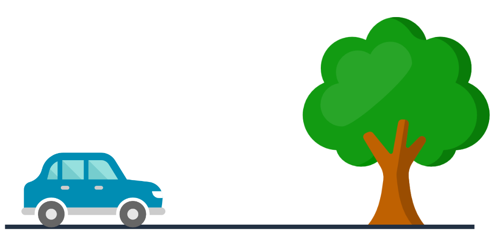
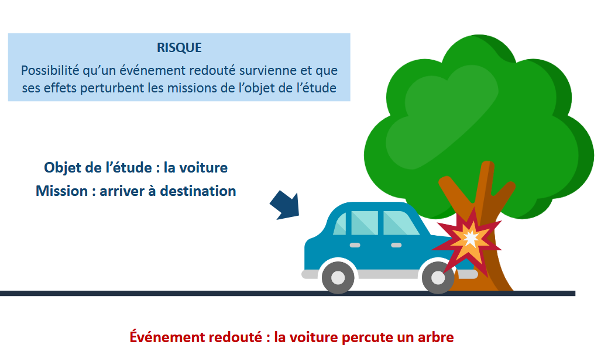
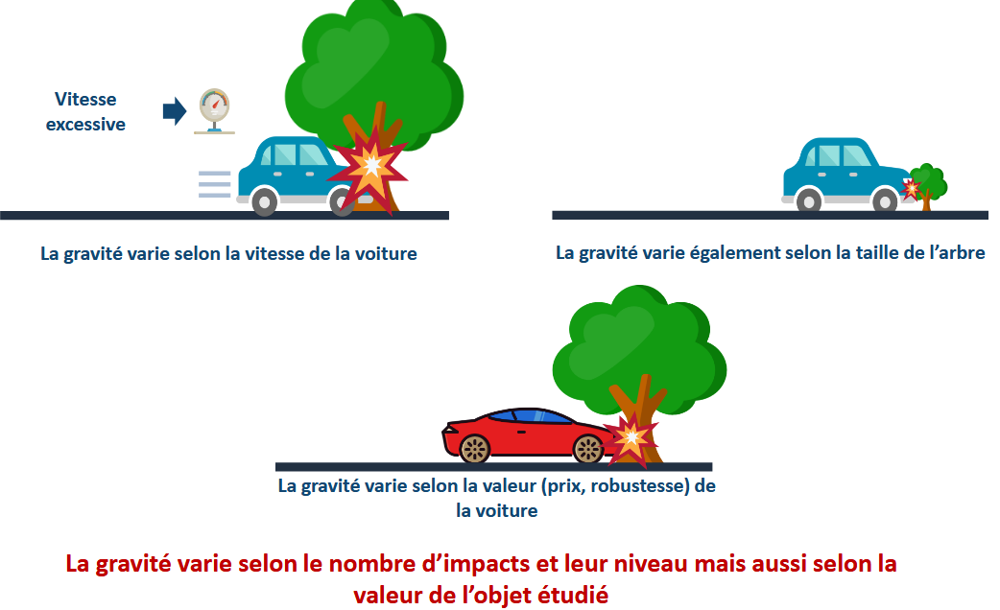
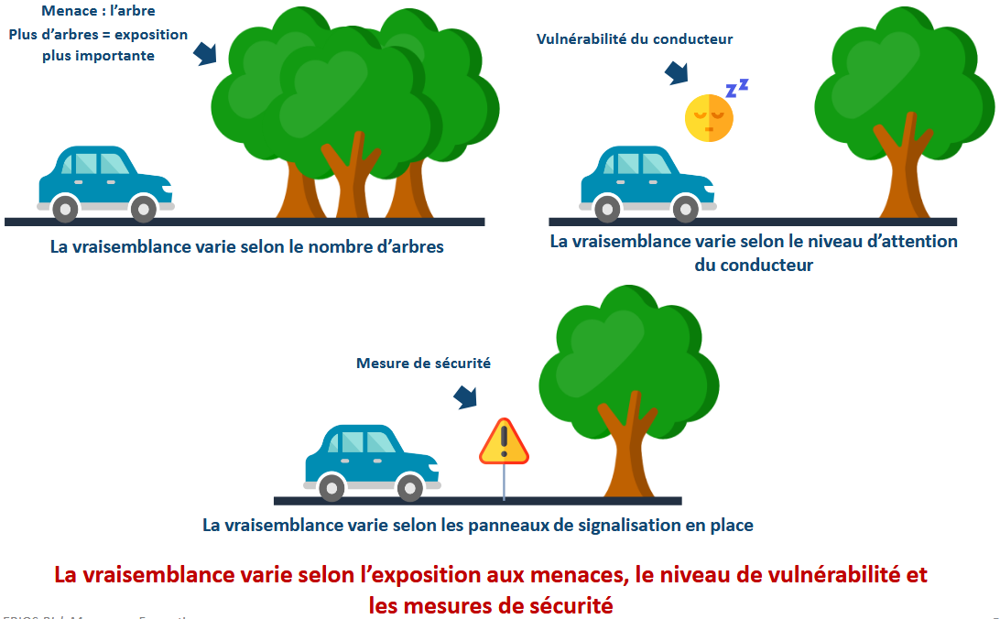
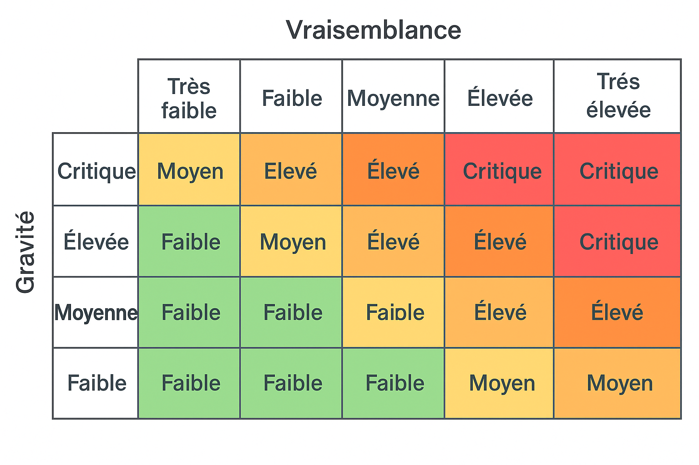
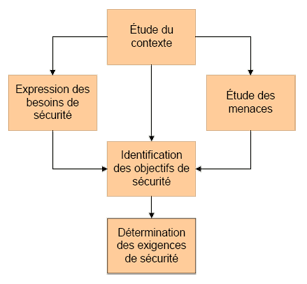
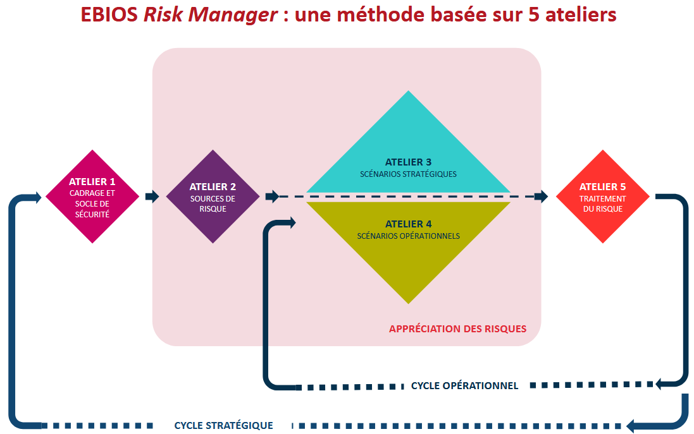
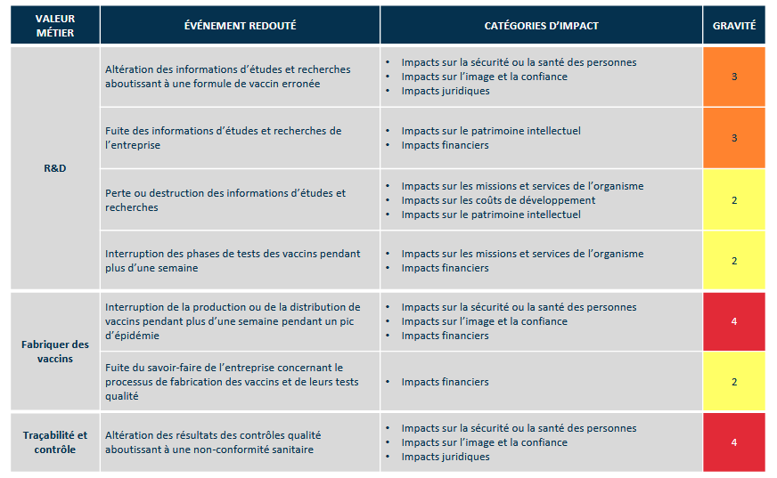

7. La méthode EBIOS 📈⚓︎
Sources
- https://cyber.gouv.fr : La méthode EBIOS Risk Manager - Le guide
- https://cyber.gouv.fr : L'ANSSI met à jour la méthode EBIOS Risk Manager
- cyberzoide : les méthodes d'analyse des risques de Hugo Etiévant
- Formation de ENSIBS "réaliser une analyse de risque avec la méthode EBIOS-RM de l’ANSSI" par julien.breyault@univ-ubs.fr
Compétences
B3 SLAM : Assurer la cybersécurité d’une solution applicative et de son développement
🎯 Analyser des incidents de sécurité, proposer et mettre en oeuvre des contre-mesures
La sécurité du système d'information d'une entreprise est un requis important pour la poursuite de ses activités. Qu'il s'agisse de la dégradation de son image de marque, du vol de ses secrets de fabrication ou de la perte de ses données clients. Une catastrophe informatique a toujours des conséquences fâcheuses pouvant aller jusqu'au dépôt de bilan.
1. Préalable : notion de risque⚓︎
1.1 Qu'est ce qu'un risque ?⚓︎

🔐 Définition du risque en cybersécurité
Un risque en cybersécurité est la combinaison d'une menace, d'une vulnérabilité et de ses impacts potentiels sur un système d'information.
🔍 Explication des termes :
Menace : un événement ou un acte malveillant (ex : attaque par ransomware, phishing, incendie, etc.).
Vulnérabilité : une faiblesse ou faille dans le système (ex : mot de passe faible, logiciel non mis à jour).
Impact : les conséquences si la menace exploite la vulnérabilité (ex : perte de données, arrêt de service, atteinte à la réputation).

1.2 Quelle est la gravité de ce risque ?⚓︎

⚠️ La gravité d’un risque
C’est le niveau de conséquences que peut avoir un risque s’il se réalise. Elle s’évalue selon l’impact sur les biens à protéger (données, services, image, etc.).
📊 Exemple dans une grille :
| Risque identifié | Gravité estimée | Justification |
|---|---|---|
| Fuite de données RH | Élevée | Données sensibles, image et sanctions CNIL |
| Indisponibilité site web | Moyenne | Perturbation du service client |
| Perte de badges d’accès | Faible | Impact limité, solution de rechange possible |
1.3 Quelle est la vraisemblance de ce risque ?⚓︎

🔄 Définition de la vraisemblance d’un risque
La vraisemblance d’un risque correspond à la probabilité qu’il se réalise, c’est-à-dire que la menace exploite la vulnérabilité avec succès.
🧮 Matrice de criticité : Gravité × Vraisemblance

📝 Exercice : Évaluation de scénarios de risques
À partir des scénarios ci-dessous, évaluez pour chaque cas :
▶️ Le niveau de gravité (Faible, Moyenne, Élevée, Critique),
▶️ Le niveau de vraisemblance (Très faible à Très élevée),
▶️ Positionnez chaque scénario dans la matrice Gravité × Vraisemblance,
▶️ Déterminez le niveau de risque global (Faible, Moyen, Élevé, Critique).
🔐 Scénarios proposés :
- Un mot de passe administrateur par défaut est encore utilisé sur un routeur exposé à Internet.
- Un employé clique sur un lien de phishing dans un e-mail, mais un filtre anti-phishing bloque la page.
- Un incendie dans la salle serveur provoque une perte de disponibilité du système central. Les sauvegardes sont dans le même bâtiment.
- Un stagiaire installe un logiciel non autorisé sur un poste client, sans droit d’admin.
- Un ransomware se propage dans le réseau, mais les sauvegardes sont à jour et permettent la restauration rapide.
- Un partenaire externe accède régulièrement à des fichiers sensibles via un lien non chiffré.
📊 Grille à compléter :
| # | Scénario résumé | Gravité estimée | Vraisemblance estimée | Niveau de risque | Justification (brève) |
|---|---|---|---|---|---|
| 1 | Routeur avec mot de passe par défaut | ||||
| 2 | Phishing bloqué par le filtre | ||||
| 3 | Incendie dans la salle serveur | ||||
| 4 | Logiciel non autorisé sur un poste utilisateur | ||||
| 5 | Ransomware avec sauvegardes | ||||
| 6 | Lien non chiffré avec un partenaire externe |
| # | Scénario résumé | Gravité estimée | Vraisemblance estimée | Niveau de risque | Justification |
|---|---|---|---|---|---|
| 1 | Routeur avec mot de passe par défaut | Élevée | Très élevée | Critique | Faille critique facilement exploitable par des attaquants. |
| 2 | Phishing bloqué par le filtre | Faible | Élevée | Moyen | Le risque est contenu par la mesure de sécurité existante. |
| 3 | Incendie dans la salle serveur, sauvegardes sur place | Critique | Moyenne | Élevé | Risque majeur sur disponibilité + manque de redondance. |
| 4 | Logiciel non autorisé installé sans droits admin | Faible | Moyenne | Faible | Impact limité, peu de risques techniques réels. |
| 5 | Ransomware avec sauvegardes récentes | Moyenne | Élevée | Élevé | Menace sérieuse, impact atténué par les sauvegardes. |
| 6 | Lien non chiffré avec un partenaire externe | Élevée | Moyenne | Élevé | Risque d’interception de données sensibles. |
2. Présentation de EBIOS Risk Manager⚓︎
EBIOS Risk Manager (EBIOS RM) est la méthode d’appréciation et de traitement du risque numérique publiée par l’Agence nationale de la sécurité et des systèmes d’information (ANSSI) avec le soutien du Club EBIOS. Elle propose une boite à outils adaptable, dont l’utilisation varie selon l’objectif du projet et est compatible avec les référentiels normatifs en vigueur, en matière de gestion des risques comme en matière de sécurité du numérique.
EBIOS Risk Manager permet d’apprécier les risques numériques et d’identifier les mesures de sécurité à mettre en œuvre pour les maitriser. Elle permet aussi de valider le niveau de risque acceptable et de s’inscrire à plus long terme dans une démarche d’amélioration continue. Enfin, cette méthode permet de faire émerger les ressources et arguments utiles à la communication et à la prise de décision au sein de l’organisation et vis-à-vis de ses partenaires.
La méthode EBIOS se compose de cinq guides (Introduction, Démarche, Techniques, Outillages) et d'un logiciel permettant de simplifier l'application de la méthodologie explicitée dans ces guides. Le logiciel permet de simplifier l'application de la méthode et d'automatiser la création des documents de synthèse.
La méthode EBIOS est découpée en cinq étapes :
2.1 Les cinq étapes de la méthode EBIOS⚓︎
- Étude du contexte
- Expression des besoins de sécurité
- Étude des menaces
- Identification des objectifs de sécurité
- Détermination des exigences de sécurité

L'étude du contexte permet d'identifier quel système d'information est la cible de l'étude. Cette étape délimite le périmètre de l'étude : présentation de l'entreprise, architecture du système d'information, contraintes techniques et réglementaires, enjeux commerciaux. Mais est aussi étudié le détail des équipements, des logiciels et de l'organisation humaine de l'entreprise.
L'expression des besoins de sécurité permet d'estimer les risques et de définir les critères de risque. Les utilisateurs du SI expriment durant cette étape leurs besoins de sécurité en fonction des impacts qu'ils jugent inacceptables.
L'étude des menaces permet d'identifier les risques en fonction non plus des besoins des utilisateurs, mais en fonction de l'architecture technique du système d'information. Ainsi la liste des vulnérabilités et des types d'attaques est dressée en fonction des matériels, de l'architecture réseau et des logiciels employés. Et ce, quelles que soient leur origine (humaine, matérielle, environnementale) et leur cause (accidentelle, délibérée).
L'identification des objectifs de sécurité confronte les besoins de sécurité exprimés et les menaces identifiées afin de mettre en évidence les risques contre lesquels le SI doit être protégé. Ces objectifs vont former un cahier des charges de sécurité qui traduira le choix fait sur le niveau de résistance aux menaces en fonction des exigences de sécurité.
La détermination des exigences de sécurité permet de déterminer jusqu'où on devra aller dans les exigences de sécurité. Il est évident qu'une entreprise ne peut faire face à tout type de risques, certains doivent être acceptés afin que le coût de la protection ne soit pas exorbitant. C'est notamment la stratégie de gestion du risque tel que cela est défini dans un plan de risque qui sera déterminée ici : accepter, réduire ou refuser un risque. Cette stratégie est décidée en fonction du coût des conséquences du risque et de sa probabilité de survenance. La justification argumentée de ces exigences donne l'assurance d'une juste évaluation.
EBIOS fournit donc la méthode permettant de construire une politique de sécurité en fonction d'une analyse des risques qui repose sur le contexte de l'entreprise et des vulnérabilités liées à son SI.

2.2 Comment utiliser la Méthode EBIOS Risk Manager ?⚓︎
La méthode EBIOS Risk Manager peut être utilisée à plusieurs fins :
- mettre en place ou renforcer un processus de management du risque numérique au sein d’une organisation
- apprécier et traiter les risques relatifs à un projet numérique, notamment dans l’objectif d’une homologation de sécurité
- définir le niveau de sécurité à atteindre pour un produit ou un service selon ses cas d’usage envisagés et les risques à contrer, dans la perspective d’une certification ou d’un agrément par exemple
Elle s’applique aussi bien aux organisations publiques ou privées, quels que soient leur taille, leur secteur d’activité et que leurs systèmes d’information soient en cours d’élaboration ou déjà existants.
3.1 Quelles catégories d’impacts faut-il prendre en compte ?⚓︎
(Fiche méthode 3 du EBIOS RISK MANAGER - LE SUPPLÉMENT)
Les catégories ci-après peuvent servir de base pour identifier les impacts liés aux événements redoutés et faciliter l’évaluation de la gravité :
- impacts sur les missions et services de l’organisation ;
- impacts humains, matériels ou environnementaux ;
- impacts sur la gouvernance ;
- impacts financiers ;
- impacts juridiques ;
- impacts sur l’image et la confiance.
note
selon le contexte, certaines catégories peuvent correspondre à des facteurs aggravants ou à des impacts indirects.
| IMPACT | EXEMPLES (LISTE NON EXHAUSTIVE) |
|---|---|
| IMPACTS SUR LES MISSIONS ET SERVICE DE L'ORGANISATION | |
| CONSÉQUENCES DIRECTES OU INDIRECTES SUR LA RÉALISATION DES MISSIONS ET SERVICES | Incapacité à fournir un service, dégradation de performances opérationnelles, retards, impacts sur la production ou la distribution de biens ou de services, impossibilité de mettre en œuvre un processus clé. |
| IMPACTS HUMAINS, MATÉRIELS OU ENVIRONNEMENTAUX | |
| IMPACTS SUR LA SÉCURITÉ OU SUR LA SANTÉ DES PERSONNES CONSÉQUENCES DIRECTES OU INDIRECTES SUR L'INTÉGRITÉ PHYSIQUE DE PERSONNES | Accident du travail, maladie professionnelle, perte de vies humaines, mise en danger, crise ou alerte sanitaire. |
| IMPACTS MATÉRIELS DÉGÂTS MATÉRIELS OU DESTRUCTION DE BIENS SUPPORTS | Destruction de locaux ou d’installations, endommagement de moyens de production, usure prématurée de matériels. |
| IMPACTS SUR L'ENVIRONNEMENT CONSÉQUENCES ÉCOLOGIQUES À COURT OU LONG TERME, DIRECTES OU INDIRECTES | Contamination radiologique ou chimique des nappes phréatiques ou des sols, rejet de polluants dans l’atmosphère |
| IMPACTS SUR LA GOUVERNANCE | |
| IMPACTS SUR LA CAPACITÉ DE DÉVELOPPEMENT OU DE DÉCISION CONSÉQUENCES DIRECTES OU INDIRECTES SUR LA LIBERTÉ DE DÉCIDER, DE DIRIGER, DE METTRE EN ŒUVRE LA STRATÉGIE DE DÉVELOPPEMENT | Perte de souveraineté, perte ou limitation de l'indépendance de jugement ou de décision, limitation des marges de négociation, perte de capacité d'influence, prise de contrôle de l’organisation, changement contraint de stratégie, perte de fournisseurs ou de sous-traitants clés. |
| IMPACTS SUR LE LIEN SOCIAL INTERNE CONSÉQUENCES DIRECTES OU INDIRECTES SUR LA QUALITÉ DES LIENS SOCIAUX AU SEIN DE L’ORGANISATION | Perte de confiance des employés dans la pérennité de l’organisation, exacerbation d'un ressentiment ou de tensions entre groupes, baisse de l’engagement, perte de sens des valeurs communes. |
| IMPACTS SUR LE PATRIMOINE INTELLECTUEL OU CULTUREL CONSÉQUENCES DIRECTES OU INDIRECTES SUR LES CONNAISSANCES NON-EXPLICITES ACCUMULÉES PAR L’ORGANISATION, SUR LE SAVOIR-FAIRE, SUR LES CAPACITÉS D'INNOVATION, SUR LES RÉFÉRENCES CULTURELLES COMMUNES | Perte de mémoire de l'entreprise (anciens projets, succès ou échecs), perte de connaissances implicites (savoir-faire transmis entre générations, optimisations dans l'exécution de tâches ou de processus), captation d'idées novatrices, perte de patrimoine scientifique ou technique, perte de ressources humaines clés. |
| IMPACTS FINANCIERS | |
| CONSÉQUENCES PÉCUNIAIRES, DIRECTES OU INDIRECTES | Perte de chiffre d'affaires, perte d’un marché, dépenses imprévues, chute de valeur en bourse, baisse de revenus, pénalités imposées. |
| IMPACTS JURIDIQUES | |
| CONSÉQUENCES SUITE À UNE NON-CONFORMITÉ LÉGALE, RÉGLEMENTAIRE, NORMATIVE OU CONTRACTUELLE | Procès, amende, condamnation d'un dirigeant, amendement de contrat. |
| IMPACTS SUR L'IMAGE ET LA CONFIANCE | |
| CONSÉQUENCES DIRECTES OU INDIRECTES SUR L'IMAGE DE L’ORGANISATION, LA NOTORIÉTÉ, LA CONFIANCE DES CLIENTS | Publication d’articles négatifs dans la presse, perte de crédibilité vis-à-vis de clients, mécontentement des actionnaires, perte de notoriété, perte de confiance d’usagers. |
📝 Exercice : Identifier les impacts d’un risque
🎯 Objectif :
Pour chaque scénario présenté, identifiez les catégories d’impacts concernées (une ou plusieurs), en les justifiant brièvement.
🔐 Scénarios :
- Un serveur de messagerie est attaqué par un ransomware, rendant tous les courriels inaccessibles pendant 3 jours.
- Une base de données contenant les informations médicales de patients est publiée accidentellement en ligne.
- Un incendie dans la salle informatique provoque la destruction de plusieurs serveurs. Les données de sauvegarde n’étaient pas externalisées.
- Une entreprise reçoit une amende de la CNIL après une fuite de données personnelles de ses clients.
- Un client important résilie un contrat après avoir appris que ses données ont été mal sécurisées.
- Une fausse information diffusée par un hackeur sur le site web de l’organisation dégrade sa réputation pendant plusieurs jours.
🧩 Tableau à compléter :
| # | Scénario résumé | Catégories d'impacts identifiées | Justification(s) |
|---|---|---|---|
| 1 | Ransomware sur messagerie | Missions/services, gouvernance, image | |
| 2 | Données médicales publiées | ||
| 3 | Incendie – destruction de serveurs | ||
| 4 | Amende CNIL | ||
| 5 | Résiliation d’un client | ||
| 6 | Fausse information sur le site |
▶️ Ensuite pour chaque scéanrio, proposer une Action corrective prioritaire Scénario par scénario
| # | Scénario résumé | Catégories d'impacts identifiées | Justification(s) |
|---|---|---|---|
| 1 | Ransomware sur la messagerie | - Impacts sur les missions et services : interruption du service de communication interne. - Impacts sur la gouvernance : impossibilité de communiquer des décisions ou des consignes. - Impacts sur l’image et la confiance : si l’information circule à l’extérieur, l’organisation peut sembler vulnérable. |
La messagerie est un outil de travail central. Son indisponibilité a un impact direct sur l’activité et l’organisation interne. |
| 2 | Fuite de données médicales | - Impacts juridiques : violation du RGPD et des lois sur les données de santé. - Impacts sur l’image et la confiance : les patients peuvent perdre confiance. - Impacts financiers : amendes potentielles, perte de clients. - Impacts sur la gouvernance : mise en cause des responsables de la sécurité. |
Les données de santé sont très sensibles, et leur divulgation engage à la fois la responsabilité juridique et la réputation. |
| 3 | Incendie dans la salle serveurs | - Impacts humains, matériels ou environnementaux : destruction matérielle, risques pour les personnes. - Impacts sur les missions et services : interruption des services hébergés. - Impacts sur la gouvernance : nécessité de gérer une crise opérationnelle majeure. |
La perte physique des serveurs affecte l’organisation à tous les niveaux : technique, décisionnel, opérationnel. |
| 4 | Amende de la CNIL après fuite de données | - Impacts juridiques : sanction administrative officielle. - Impacts financiers : coût de l’amende + remédiation. - Impacts sur l’image et la confiance : publication possible sur le site de la CNIL, réputation atteinte. |
Ce type de sanction est public et affecte à la fois la trésorerie et la réputation. |
| 5 | Résiliation par un client après incident de sécurité | - Impacts financiers : perte de revenus et de confiance commerciale. - Impacts sur l’image et la confiance : effet boule de neige possible auprès d’autres clients. - Impacts sur la gouvernance : pression sur la direction, perte de crédibilité. |
La perte d’un client majeur peut entraîner un effet domino et affecter le pilotage stratégique. |
| 6 | Fausse information sur le site (défiguration) | - Impacts sur l’image et la confiance : perception négative de la sécurité de l’organisation. - Impacts sur la gouvernance : obligation de réagir rapidement, gestion de crise potentielle. |
Même si l’impact technique est limité, l’effet médiatique peut être fort. |
✅ Actions correctives prioritaires – Scénario par scénario
| # | Scénario résumé | Action corrective prioritaire | Objectif |
|---|---|---|---|
| 1 | Ransomware sur la messagerie | 🛡️ Mettre en place une politique de sauvegarde régulière et une isolation des sauvegardes | Permettre la restauration rapide des services sans payer de rançon. |
| 2 | Fuite de données médicales | 🔒 Appliquer un contrôle d’accès strict (authentification forte + journalisation) et chiffrer les données sensibles | Éviter les fuites de données personnelles sensibles. |
| 3 | Incendie dans la salle serveurs | 🧯 Externaliser les sauvegardes (cloud ou site distant) et prévoir un plan de reprise d’activité (PRA) | Assurer la continuité des services en cas de sinistre physique. |
| 4 | Amende de la CNIL après une fuite | 📚 Mettre à jour le registre de traitement des données et réaliser une analyse d’impact (PIA) | Être conforme au RGPD et identifier les points faibles du traitement des données. |
| 5 | Résiliation d’un client | 🧪 Mettre en œuvre un audit de sécurité + corrections rapides (patchs, accès, configurations) | Rétablir la confiance des partenaires et prouver une démarche proactive. |
| 6 | Fausse information sur le site | 🔍 Sécuriser le site web (CMS à jour, authentification renforcée, WAF) | Éviter toute altération de contenu visible par le public. |
2.3 Quelle échelle de gravité utiliser ?⚓︎
Lorsque l’on crée une échelle de niveaux d’impacts, le principal enjeu réside dans le fait qu’elle soit comprise et utilisable par les personnes amenées à évaluer l’importance des conséquences d’un événement redouté.
Il est conseillé de l’élaborer en concertation avec les personnes qui vont estimer ces niveaux – particulièrement les métiers – afin de faciliter son appropriation et la cohérence de la cotation. L’échelle de gravité à privilégier reste celle déjà mise en place (si elle existe) pour apprécier les risques de l’organisation dans le cadre d’une démarche globale de management du risque (incluant les risques financier, juridique, etc.).
Le risque numérique doit en effet s’insérer dans la cartographie globale du risque.
| NIVEAU DE L’ÉCHELLE | DÉFINITION |
|---|---|
| G5 🔥 Catastrophique | Conséquences sectorielles ou régaliennes au-delà de l’organisation. Écosystème(s) sectoriel(s) impacté(s) de façon importante, avec des conséquences éventuellement durables. Et/ou : difficulté pour l’État, voire incapacité, d’assurer une fonction régalienne ou une de ses missions d’importance vitale. Et/ou : impacts critiques sur la sécurité des personnes et des biens (crise sanitaire, pollution environnementale majeure, destruction d’infrastructures essentielles, etc.). |
| G4 ⚠️ Critique | Conséquences désastreuses pour l’organisation avec d’éventuels impacts sur l’écosystème. Incapacité pour l’organisation d’assurer la totalité ou une partie de son activité, avec d’éventuels impacts graves sur la sécurité des personnes et des biens. L’organisation ne surmontera vraisemblablement pas la situation (sa survie est menacée), les secteurs d’activité ou étatiques dans lesquels elle opère seront susceptibles d’être légèrement impactés, sans conséquences durables. |
| G3 🚨 Grave | Conséquences importantes pour l’organisation. Forte dégradation des performances de l’activité, avec d’éventuels impacts significatifs sur la sécurité des personnes et des biens. L’organisation surmontera la situation avec de sérieuses difficultés (fonctionnement en mode très dégradé), sans impact sectoriel ou étatique. |
| G2 ⚙️ Significative | Conséquences significatives mais limitées pour l’organisation. Dégradation des performances de l’activité sans impact sur la sécurité des personnes et des biens. L’organisation surmontera la situation malgré quelques difficultés (fonctionnement en mode dégradé). |
| G1 ✅ Mineure | Conséquences négligeables pour l’organisation. Aucun impact opérationnel ni sur les performances de l’activité ni sur la sécurité des personnes et des biens. L’organisation surmontera la situation sans trop de difficultés(consommation des marges). |
L’usage d’une échelle à 4 ou 5 niveaux est guidé par les considérations suivantes :
-
la nécessité de mesurer des impacts très élevés qui correspondent à des crises majeures, voire une déstabilisation et une perte de résilience allant au-delà de la seule organisation concernée (exemples : paralysie ou forte dégradation de l’ensemble d’un secteur industriel, incapacité pour l’État d’assurer une fonction régalienne, crise sanitaire ou pollution majeure touchant une zone importante, compromission d’information hautement classifiée). Dans ce cas, une échelle à 5 niveaux est recommandée. Dans le cas contraire, 4 niveaux suffiront
-
la cohérence du nombre de niveaux entre les échelles de gravité et de vraisemblance pour l’appréciation des risques réalisée lors de l’atelier 4. Si vous utilisez une échelle de vraisemblance à 5 niveaux, utilisez de préférence une échelle de gravité à 5 niveaux.
Contexte
NOTE : l’estimation de l’importance des impacts doit être contextualisée, de telle sorte que les acteurs soient capables de distinguer les niveaux d’impacts de l’échelle. Une façon usuelle de procéder est d’appuyer d’exemples la description de chaque niveau.
📌 Exemple d’échelle de gravité pour une activité de production industrielle :
| NIVEAU DE L'ÉCHELLE | CONSÉQUENCES SUR L'EXPLOITATION |
|---|---|
| G4 – CRITIQUE | Arrêt durable de l'exploitation nécessitant une intervention de maintenance. |
| G3 – GRAVE | Arrêt temporaire de l'exploitation puis reprise sous une procédure particulière (exemple : opérateur supplémentaire). |
| G2 – SIGNIFICATIVE | Poursuite de l'exploitation avec une action opérateur. |
| G1 – MINEURE | Poursuite de l'exploitation avec une alarme signalant le défaut. |
📌 Autre exemple :

3. Comment utiliser la Méthode EBIOS Risk Manager ?⚓︎
📝 Exercice d'application
Associez à chaque situation ci-dessous un niveau de gravité (G1 à G5) justifié en une phrase.
🎥 Situations :
- Perte de connexion à Internet pendant 15 minutes sur un site secondaire.
- Destruction du data center principal suite à une inondation.
- Perte de l’accès à l’outil de facturation pendant 2 jours.
- Piratage de l’hôpital central entraînant la divulgation de dossiers médicaux.
- Bug dans l’interface de saisie de formulaires, corrigé dans l’heure.
▶️ proposer une mesure de protection ou de limitation des impacts pour chacun.
| # | Situation | Gravité estimée | Justification |
|---|---|---|---|
| 1 | Perte de connexion à Internet pendant 15 min sur un site secondaire. | G1 – Mineure | Impact très limité sur l’activité, problème temporaire, sans atteinte à la sécurité ou à la performance globale. |
| 2 | Destruction du data center principal suite à une inondation. | G4 – Critique (voire G5 selon contexte) | L’activité entière de l’organisation est probablement arrêtée. Infrastructure vitale compromise. Peut atteindre G5 si cela touche des services publics ou régaliens. |
| 3 | Perte de l’accès à l’outil de facturation pendant 2 jours. | G3 – Grave | Forte gêne opérationnelle, accumulation de retard, risque financier indirect mais pas vital. |
| 4 | Piratage de l’hôpital avec fuite de dossiers médicaux. | G5 – Catastrophique | Atteinte à la vie privée, possible crise sanitaire, responsabilité régalienne de l’État engagée, violation massive de données sensibles. |
| 5 | Bug dans l’interface de saisie de formulaires, corrigé dans l’heure. | G1 – Mineure | Problème ponctuel, facilement résolu, sans impact durable sur l’organisation. |
✅ Mesures de protection pour chaque scénario
| # | Situation | Mesure de protection à mettre en place | Objectif de la mesure |
|---|---|---|---|
| 1 | Perte de connexion à Internet sur un site secondaire | 🔁 Mettre en place une ligne de secours (failover) ou une double connexion Internet | Garantir la continuité minimale de service en cas de panne. |
| 2 | Destruction du data center principal suite à une inondation | ☁️ Déployer un Plan de Reprise d’Activité (PRA) avec redondance géographique (cloud ou second site) | Permettre la restauration rapide de l’activité après un sinistre physique. |
| 3 | Perte d’accès à l’outil de facturation pendant 2 jours | 📦 Mettre en place une sauvegarde journalière de l’outil et un plan de continuité métier (PCO) | Réduire l’indisponibilité et maintenir les fonctions vitales en cas d’incident logiciel. |
| 4 | Piratage d’un hôpital avec fuite de données médicales | 🔒 Appliquer des contrôles d’accès forts (authentification à double facteur), journalisation et chiffrement des données sensibles | Protéger les données confidentielles et détecter toute activité anormale. |
| 5 | Bug corrigé rapidement dans un formulaire | 🧪 Mettre en place des tests automatisés (tests unitaires, fonctionnels) avant mise en production | Prévenir les erreurs logicielles et améliorer la qualité du code. |